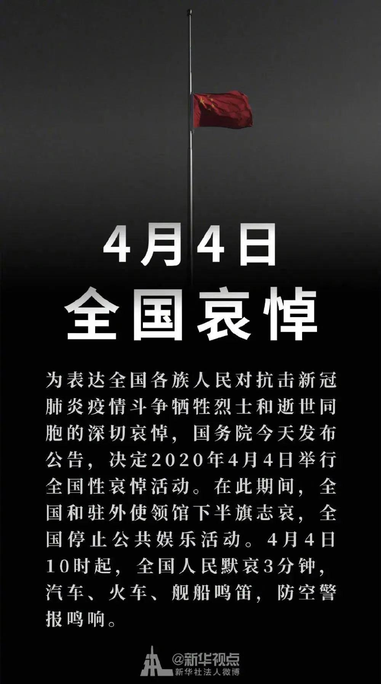
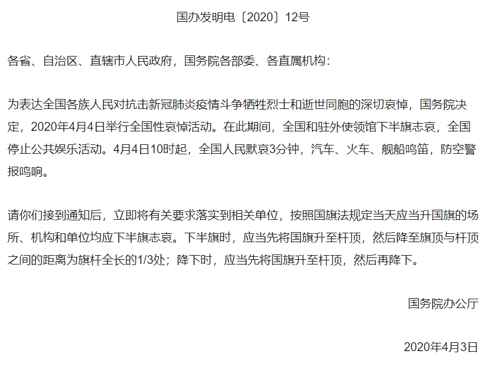
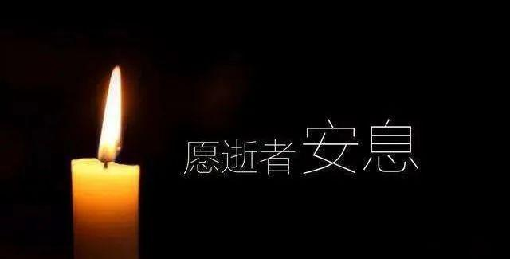
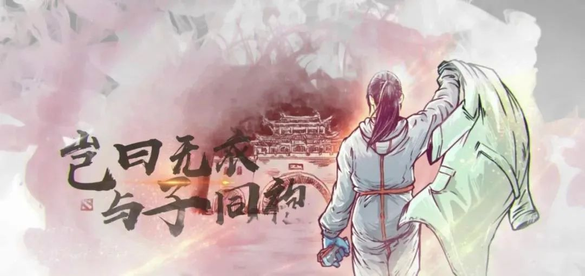

为表达全国各族人民对抗击新冠肺炎疫情斗争牺牲烈士和逝世同胞的深切哀悼，国务院今天发布公告，决定2020年4月4日举行全国性哀悼活动。
在此期间，全国和驻外使领馆下半旗志哀，全国停止公共娱乐活动。4月4日10时起，全国人民默哀3分钟，汽车、火车、舰船鸣笛，防空警报鸣响。

国务院办公厅关于为新冠肺炎疫情牺牲烈士和逝世同胞举行全国性哀悼活动的通知


《秦风·无衣》是《诗经》中最为著名的爱国主义诗篇，它是产生于秦地（今陕西中部和甘肃东南部）人民抗击西戎入侵者的军中战歌。在这种反侵略的战争中，秦国人民表现出英勇无畏的尚武精神，也创造了这首充满爱国主义激情的慷慨战歌，其原文为：
岂曰无衣？与子同袍。王于兴师，修我戈矛。与子同仇。
岂曰无衣？与子同泽。王于兴师，修我矛戟。与子偕作。
岂曰无衣？与子同裳。王于兴师，修我甲兵。与子偕行。

抗击新冠肺炎，也是一场没有硝烟的战争，也是一场人民战争，需要我们统一思想，统一行动，一起奔赴战场，就如几千年前的秦人一样，就让我们用这一首激昂慷慨、同仇敌忾的战歌，致敬烈士，安慰逝者，激励后来人。
4月4日上午10点，我们在一起。